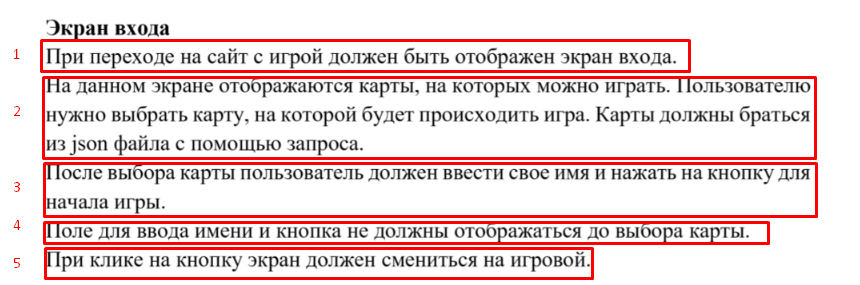

202202181645 Форма входа в игру / Модальное окно с формой
Цели и задачи
Перечитаем ТЗ касательно экрана входа:

- Первый пункт у нас выполняется, можно сказать, по-умолчанию: как только
мы выложим на сервер
index.html-Экран с выбором карты- это первое, что будет загружаться у пользователя. - Второй пункт, мы сделали в самом начале.
- Третий пункт в верстке представлен в виде всплывающего Bootstrap-окна. Нам осталось только описать логику его работы на JavaScript.
- Четвертый пункт выполняется по-умолчанию, осталось только разобраться, как именно форма скрыта и сообразить как её показать.
- Пятый пункт мы реализовали на предыдущем шаге.
План действий
- Разобраться как можно показать Модальное окно Bootstrap
- Передать информацию о выбранной карте в форму
- Проверить, что имя пользователя введено корректно (Провалидировать форму).
- Переключиться на экран Игры, передав игре всю начальную информацию, введенную пользователем (Карту, её название и имя пользователя).